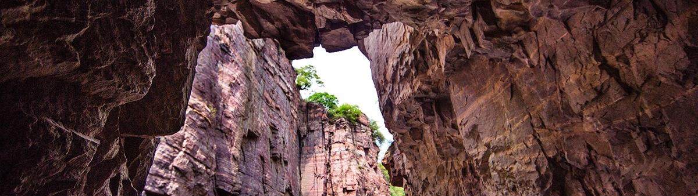

锡崖沟
锡崖沟景区位于王莽岭景区南端四周落差1000多米的深谷之中，锡崖挂壁路被称为世界奇观。该区山陡沟深，地势险恶，峭壁环列，由于天险阻隔，沟中二百户人家几乎与世陷于隔绝，千百年来自生自灭。1962年，沟里人不甘闭塞，向大山宣战，历时三十年，两代人在村西绝壁上凿出一条长7.5公里的挂壁公路，开创了中国乡村筑路史上的奇迹，毛泽东同志名言中“愚公移山”、“人定胜天”的真谛在这里得到了真实体现。这里成为启迪和升华艰苦奋斗、拼搏进取精神的源泉，目前已被定为山西省德育教育基地。大山的阻隔同时也造就了一个世外桃源，该区谷底阡陌交通，沔桥流水，田畦青翠，民风纯朴，自然风光秀丽，村中有一南北走向的大峡谷垂直分开，深邃悠长，峭壁如屏、砂岩如朱，一股清泉从壁间飞流而下，涛声如雷，寒气上逼，云雾飘渺，蔚为壮观。